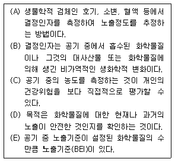
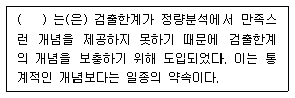
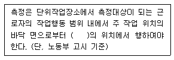
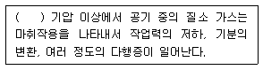
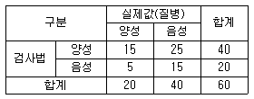
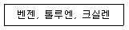
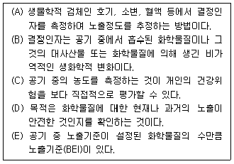

산업위생관리기사 (2008-07-27 기출문제)
1과목: 산업위생학개론
1. 미국국립산업안전보건연구원(NIOSH)에서 제시한 직무 스트레스 모형에서 직무 스트레스 요인을 작업요인, 환경요인, 조직요인으로 크게 구분할 때 다음 중 조직요인에 해당하는 것은?
- 교대근무
- 소음 및 진동
- 관리유형
- 작업부하
(정답률: 74%)

2. 우리나라의 규정상 하루에 25kg 이상의 물체를 몇 회 이상 드는 작업일 경우 근골격계 부담 작업으로 분류하는가?
- 2회
- 5회
- 10회
- 25회
(정답률: 81%)
3. 우리나라의 규정상 총 분진의 노출기준에서 제 2종 분진에 대한 노출기준으로 옳은 것은?
- 0.⑤ mg/m3
- 2mg/m3
- 5mg/m3
- 10mg/m3
(정답률: 43%)
4. 미국정부산업위생전문가협의회(ACGIH)에서 권고하고 있는 허용농도 적용상의 주의사항이 아닌 것은?
- 대기오염 평가 및 관리에 적용하지 않도록 한다.
- 독성의 강도를 비교할 수 있는 지표로 사용하지 않도록 한다.
- 안전농도와 위험농도를 정확히 구분하는 경계선으로 이용하지 않도록 한다.
- 산업장의 유해조건을 평가하기 위한 지침으로 사용하지 않도록 한다.
(정답률: 60%)
5. 기초대사량이 80kcal/h, 작업대사량이 240kcal/h인 육제적인 작업을 할 때 이 작업의 실동률(%)은 약 얼마인가? (단, 사이또 오시마식을 적용한다.)
- 60%
- 70%
- 80%
- 90%
(정답률: 50%)
6. 에틸벤젠(TLV = 100ppm) 을 사용하는 작업장의 작업시간이 9시간일 때에는 허용기준을 보정하여야 한다. 이 때 OSHA 조정방법과 Brief and Scala 보정방법을 적용하였을 때 두 보정된 허용기준치 간의 차이는 약 얼마인가?
- 2.2ppm
- 3.3ppm
- 4.2ppm
- 5.6ppm
(정답률: 68%)
7. 영국의 외과의사 Pott에 의하여 최초로 발견된 직업성 암은?
- 음낭암
- 비암
- 폐암
- 간암
(정답률: 97%)
8. VDT 증후군의 예방을 위한 작업자세로 적절하지 않은 것은?
- 작업자의 시선은 수평선상으로부터 아래로 10~5도 이내일 것
- 눈으로부터 화면까지의 시거리는 40cm 이상을 유지할 것
- 아래팔은 손등과 일직선을 유지하여 손목이 꺽이지 않도록 할 것
- 윗 팔(UPPER ARM)은 자연스럽게 늘어뜨리고, 팔꿈치의 내각은 90도 이내로 할 것
(정답률: 49%)
9. 다음 중 미국정부산업위생전문가협의회(ACGIH)에서 유해물질의 허용기준을 설정하는 데 있어 이용되는 자료와 가장 거리가 먼 것은?

- 화학구조상의 유사성
- 산업장 역학조사 자료
- 화학물질의 보관성
- 동물실험 자료
(정답률: 75%)
10. 다음 중 단기간 휴식을 통해서는 회복될 수 없는 발병단계의 피로를 무엇이라 하는가?
- 정신피로
- 곤비
- 과로
- 전신피로
(정답률: 80%)
11. 인간공학에서 최대작업역(maximum area)에 대한 설명으로 가장 적절한 것은?
- 허리의 불편 없이 적절히 조작할 수 있는 영역
- 팔과 다리를 이용하여 최대한 도달할 수 있는 영역
- 어깨에서부터 팔을 뻗어 도달 할 수 있는 최대 영역
- 상완을 자연스럽게 몸에 붙인 채로 전완을 움직일 때 도달하는 영역
(정답률: 83%)
12. 미국산업위생학술원(AAIH)이 채택한 윤리강령 중 산업위생전문가로서 지켜야 할 책임과 가장 거리가 먼 것은?
- 기업체의 기밀은 외부에 누설하지 않는다.
- 과학적 방법의 적용과 자료의 해석에서 객관성을 유지한다.
- 근로자, 사회 및 전문직종의 이익을 위해 과학적 지식을 공개하고 발표한다.
- 전문적 판단이 타협에 의하여 좌우될 수 있는 상황에 개입하여 객관적 자료에 의해 판단한다.
(정답률: 86%)
13. 300명이 근무하는 A작업장에서 연간 55건의 재해발생으로 60명의 사상자가 발생하였다. 이 사업장의 연간 근로시간수가 700000시간이었다면 도수율은 약 얼마인가?
- 32.5
- 71.4
- 78.6
- 85.7
(정답률: 76%)
14. 다음 중 직업성 피부질환에 대한 설명으로 틀린 것은?
- 대부분은 화학물질에 의한 접촉피부염이다.
- 정확한 발생빈도와 원인물질의 추정은 거의 불가능하다
- 접촉피부염의 대부분은 알레르기에 의한 것이다.
- 직업성 피부질환의 간접요인으로는 인종, 연령, 계절 등이 있다.
(정답률: 67%)
15. 육체적 작업능력(PWC)이 15kcal/min 인 근로자 1일 8시간 물체를 운반 하고 있다. 이때의 작업 대사율이 6.5kcal/min 이고, 휴식시의 대사량이 1.5kcal/min 일 때 매 시간당 적정 휴식시간은 약 얼마인가? (단, Hertig 의 식을 적용한다.)
- 18분
- 25분
- 30분
- 42분
(정답률: 80%)
16. 산업피로의 검사방법 중에서 CMI(cornel medical index) 조사에 해당하는 것은?
- 생리적 기능검사
- 생화학적 검사
- 피로자각증상
- 동작분석
(정답률: 66%)
17. 다음 중 어떤 유해요인에 노출되어 얼마만큼의 환자 수가 증가되는지를 설명해 주는 위험도는?
- 상대위험도
- 인자위험도
- 기여위험도
- 노출위험도
(정답률: 60%)
18. 공기 중의 혼합물로서 아세톤 400ppm(TLV = 750ppm), 메틸에틸케톤 100ppm(TLV = 200ppm)이 서로 상가 작용을 할 때 이 혼합물의 노출지수는 약 얼마인가?
- 0.82
- 1.03
- 1.10
- 1.45
(정답률: 77%)
19. 산업안전보건법상 보건관리자의 직무에 해당하지 않는 것은?
- 산업안전보건위원회에서 심의, 의결한 직무와 안전보건관리규정 및 취업규칙에서 정한 직무
- 보호구 중 보건에 관련되는 보호구의 구입시 적격품의 선정
- 산업재해 발생의 원인조사 및 재발 방지를 위한 기술적 지도, 조언
- 물질안전보건자료의 게시 또는 비치
(정답률: 60%)
20. 다음 중 근골격계 질환의 원인과 가장 거리가 먼 것은?
- 부적절한 작업자세
- 짧은 주기의 반복 작업
- 고온 다습한 환경
- 과도한 힘의 사용
(정답률: 90%)
2과목: 작업위생측정 및 평가
21. 유해물질이 무기산류(전기도도 검출기 적용)인 경우 다음 중 가장 적절한 분석기기는?
- 가스크로마토그래피
- 액체크로마토그래피
- 고성능액체크로마토그래피
- 이온크로마토그래피
(정답률: 52%)
22. 산업위행통계시 적용하는 용어 정의에 관한 내용으로 틀린 것은?
- 유효숫자란 측정 및 분석값의 정밀도를 표시하는데 필요한 숫자이다.
- 상대오차=[(근사값-참값)/참값]으로 표현된다.
- 우발오차가 작을 때는 측정결과가 정확하다고 한다.
- 조화평균이란 상이한 반응을 보이는 집단의 중심경향을 파악하고자 할 때 유용하게 이용된다.
(정답률: 54%)
23. 작업장 내 기류측정에 대한 설명으로 틀린 것은?
- 풍차풍속계는 풍차의 회전속도로 풍속을 측정한다.
- 풍차풍속계는 보통 1~150m/sec 범위의 풍속을 측정하며 옥외용이다.
- 풍차풍속계 및 카타온도계는 기류속도가 아주 낮을 때에는 적합하지 않으며 이때에는 열선풍속계와 전리풍속계를 사용하는 것이 정확하다.
- 카타온도계는 기류의 방향이 일정하고 실내 0.1m/s 이하의 불감기류를 측정할 때 사용한다.
(정답률: 29%)
24. 흡착관을 이용하여 시료를 포집할 때 고려해야 할 사항으로 거리가 먼 것은?
- 파과현상이 발생할 경우 오염물질의 농도를 과소평가할 수 있으므로 주의해야 한다.
- 시료 저장시 흡착물질의 이동현상(migration)이 일어날 수 있으며 파과현상과 구별하기 힘들다.
- 작업환경 측정시 많이 사용하는 흡착관은 앞층이 100mg, 뒷층이 50mg으로 되어 있는데 오염물질에 따라 다른 크기의 흡착제를 사용하기도 한다.
- 활성탄 흡착제는 탄소의 불포화결합을 가진 분자를 선택적으로 흡착하며 큰 비표면적을 가진다.
(정답률: 57%)
25. 다음은 산업위생 분석 용어에 관한 내용이다. ( )안에 가장 적절한내용은?

- 선택성
- 정량한계
- 표준편차
- 표준오차
(정답률: 79%)
26. 시료 채취용 막여과지에 관한 설명으로 틀린 것은?
- MCE 막여과지 : 유해물질이 표면에 주로 침착되어 현미경 분석에 유리함
- PVC 막여과지 : 유리규산을 채취하여 X-선 회절법으로 분석하는데 적절함
- PTFE 막여과지 : 열, 화학물질, 압력에 강한 특성이 있음.
- 은막 여과지 : 결합제와 섬유를 포함한 금속을 소결하여 만듬
(정답률: 73%)
27. 불꽃 방식 원자흡광광도계가 갖는 장, 단점으로 틀린 것은?
- 분석시간이 흑연로 장치에 비하여 적게 소요된다.
- 혈액이나 소변 등 생물학적 시료의 유해금속 분석에 주로 많이 사용된다.
- 일반적으로 흑연로장치나 유도결합플라스마-원자발광분석기에 비하여 저렴하다.
- 용질이 고농도로 용해되어 있는 경우 버너의 슬롯을 막을 수 있으며 점성이 큰 용액은 분무가 어려워 분무구멍을 막아버릴 수 있다.
(정답률: 40%)
28. 고열 측정방법에 관한 내용이다. ( )안에 맞는 내용은?

- 50cm 이상, 120cm 이하
- 50cm 이상, 150cm 이하
- 80cm 이상, 120cm 이하
- 80cm 이상, 150cm 이하
(정답률: 76%)
29. 로타미터(rotameter)에 관한 설명으로 틀린 것은?
- 유량을 측정할 때 흔히 사용되는 2차 표준기구이다.
- 로타미터는 바닥으로 갈수록 점점 가늘어지는 수직관과 그 안에서 자유롭게 상, 하로 움직이는 부자로 이루어져 있다.
- 로타미터는 일반적으로 +_0.5% 이내의 정확성을 가진 검량선이 제공된다.
- 대부분의 로타미터는 최대유량과 최소유량의 비율ㅇ 10:1의 범위이다.
(정답률: 57%)
30. 어느 옥외 작업장의 온도를 측정한 결과, 건구온도 32℃, 자연습구온도 25℃ 흑구온도 38℃를 얻었다. 이 작업장의 WBGT는? (단, 태양광선이 내리쬐지 않는 장소)
- 28.3℃
- 28.9℃
- 29.3℃
- 29.7℃
(정답률: 84%)
31. 화학공장의 작업장 내에 먼지 농도를 측정하였더니 5,7,5,7,6,6,4,3,9,8 ppm 이었다. 이러한 측정치의 기하평균은?
- 5.43
- 5.73
- 6.43
- 6.73
(정답률: 67%)
32. 크로마토그램에서 피크의 모양은 선처럼 가늘지 않고 일정한 폭을 가진 형태로 나타나며 분리관에서 몇 가지 요소에 의해 피크의 폭이 넓어지게 된다. 다음 중 그 요소와 가장 거리가 먼 것은?
- 평형 열확산
- 소용돌이 확산
- 세로확산
- 비평형 물질전달
(정답률: 19%)
33. 흡착관의 실리카겔관에 사용되는 실리카겔에 관한 설명으로 틀린 것은?
- 실리카겔은 극성을 띠고 흡습성이 강하므로 습도가 높을수록 파과 되기 쉽다.
- 실리카겔은 극성물질을 강하게 흡착하므로 작업장에 여러 종류의 극성물질이 공존할 때는 극성이 강한 물질이 극성이 약한 물질을 치환하게 된다.
- 파라핀류보다 물의 극성이 강하며 따라서 실리카겔에 대한 친화력도 물이 강하다.
- 시리카겔의 강한 극성으로 오염물질의 탈착이 어렵고 추출 용액이 화학분석의 방해물질로 작용하는 경우가 많다.
(정답률: 67%)
34. 입자상 물질의 채취를 위한 직경분립충돌기의 장점으로 틀린 것은?
- 입자별 동시 채취로 시료채취준비 및 채취시간을 단축 할 수 있다.
- 흡입성, 흉곽성, 호흡성 입자의 크기별로 분포와 농도를 계산할 수 있다.
- 호흡기의 부분별로 침착된 입자크기의 자료를 추정할 수 있다.
- 입자의 질량크기분포를 얻을 수 있다.
(정답률: 66%)
35. 어느 작어장에서 Trichloroethylene 의 농도를 측정한 결과 23.3 ppm, 21.6ppm , 22.4ppm , 24.1ppm , 22.7ppm ,25.4ppm 을 각각 얻었다. 중앙치(median) 는?
- 23.0ppm
- 23.2ppm
- 23.5ppm
- 23.8ppm
(정답률: 50%)
36. 흉곽성 먼지(TPM : 가스교환지역인 폐포나 폐기도에 침착되었을 때 독성을 나타내는 입자상 물질)의 평균 입자의 크기는 ? (단, ACGIH 기준)
- 0.5 마이크로미터
- 2 마이크로미터
- 4 마이크로미터
- 10 마이크로미터
(정답률: 66%)
37. 소리의 세기를 표시하는 파워레벨(PWL)이 85dB 인 기계 2대와 95dB인 기계 4대가 동시에 가동될 때 전체 소리의 파워레벨(PWL)은?
- 약 97 dB
- 약 101dB
- 약 103dB
- 약 106dB
(정답률: 56%)
38. 톨루엔 취급 작업장에서 활성탄관을 사용하여 작업장내 톨루엔 농도를 측정하고자 한다. 총 공기채취량은 72L였으며 활성탄관의 앞층에서 분석된 톨루엔 양은 900ug, 뒷층에서 분석된 톨루엔 양은 100ug 이었고 공시료에서는 앞층과 뒷층 모두 톨루엔이 검출되지 않았다. 탈착효율이 90%라면 작업장내 톨루엔 농도는? (단, 작업장 온도 25도, 1기압, 톨루엔 분자량은 92)
- 약 4.1 ppm
- 약 8.1 ppm
- 약 12.1 ppm
- 약 16.1 ppm
(정답률: 47%)
39. 유량, 측정시간, 회수율, 분석에 의한 오차가 각각 10%, 5%, 10%, 5%일 때의 누적오차와 유량에 의한 오차률을 5%로 감소(측정시간, 회수율, 분석에 의한 오차율은 변화 없음) 시켰을 때 누적 오차와의 차이는?
- 2.13%
- 2.26%
- 2.58%
- 2.77%
(정답률: 68%)
40. 용접작업 중 발생되는 용접흄을 측정하기 위해 사용할 여과지를 화학천칭을 이용해 무게를 재었더니 70.11mg 이었다. 이 여과지를 이용하여 1.5L/mim 의 시료채취유량으로 120분간 측정을 실시한 후 잰 무게는 75.88mg 이었다면 용접흄이 농도는?
- 약 18 mg/m3
- 약 24mg/m3
- 약 28 mg/m3
- 약 32 mg/m3
(정답률: 59%)
3과목: 작업환경관리대책
41. 덕트의 재질은 사용물질에 따라 다르다. 다음 중 사용 물질과 덕트 재질의 연결이 틀린 것은?
- 알칼리 - 강판
- 주물사, 고온가스 - 흑피 강판
- 강산, 염소계 용제 - 아연도금 강판
- 전리방사선 - 중질 콘크리트
(정답률: 75%)
42. 금속을 가공하는 음압수준이 98 dB(A)인 공정에서 NRR이 27인 귀마개를 착용한다면 차음효과는? (단, OSHA에서 차음효과를 예측하는 방법을 적용)
- 5dB(A)
- 10dB(A)
- 15dB(A)
- 20dB(A)
(정답률: 61%)
43. 총압력손실계산법 중에서 분지관의 수가 작고 고독성 물질이나 폭발성 및 방사성 먼지를 대상으로 하는 경우에 주로 사용하는 것은?
- 저항조절평형법
- 전압조절평형법
- 유속조절평형법
- 댐퍼조절평형법
(정답률: 34%)
44. 관경이 200MM인 직관 속을 공기가 흐르고 있다. 공기의 동점성계수가 1.5*10^(-5)m2/s이고, 레이놀즈수가 40000이하면 직관의 풍량(m3/hr)은?
- 약 340
- 약 420
- 약 530
- 약 650
(정답률: 36%)
45. 장방형 송풍관의 단경 0.13m, 장경 0.26m, 길이 15m, 속도압 30 mmH2O, 관마찰계수가 0.004일 때 관내의 압력손실은? (단, 관의 내면은 매끈하다)
- 6.6mmH2O
- 10.4mmH2O
- 14.8mmH2O
- 18.2mmH2O
(정답률: 49%)
46. 관마찰손실에 영향을 주는 상대조도를 적절히 나타낸 것은?
- 절대조도/덕트직경
- 절대조도*덕트직경
- 레이놀드수/절대조도
- 레이놀드수*절대조도
(정답률: 60%)
47. 어느 유체관의 압력을 측정한 결과, 정압이 -15mmH2O 이고, 전압이 10mmH2O였다. 이 유체관의 유속(m/s)은? (단, 공기밀도 1.21kg/m3기준)
- 10
- 15
- 20
- 25
(정답률: 50%)
48. 청력보호구의 차음효과를 높이기 위한 유의사항 중 틀린 것은?
- 청력보호구는 머리의 모양이나 귓구멍에 잘 맞는 것을 사용한다.
- 청력보호구는 잘 고정시켜서 보호구 자체의 진동을 최소한도로 줄여야 한다.
- 청력보호구는 기공이 많은 재료를 사용하여 제조한다.
- 귀덮개 형식의 보호구는 머리카락이 길 때와 안경테가 굵어서 잘 밀착되지 않을 대는 사용이 어렵다.
(정답률: 74%)
49. 관의 안지름이 200mm 인 직관을 통하여 가스유량 48m3/min 의 표준공기를 송풍할 때 관내 평균 유속(m/s)은?
- 약 21.8
- 약 23.2
- 약 25.5
- 약 28.4
(정답률: 67%)
50. 외부식 후드(포집형 후드)의 단점으로 틀린 것은?
- 포위식 후드보다 일반적으로 필요 송풍량이 많다.
- 외부 난기류의 영향을 받아서 흡인효과가 떨어진다.
- 기류속도가 후드주변에서 매우 빠르므로 유기용제나 미세 원료분말 등과 같은 물질의 손실이 크다.
- 근로자가 발생원과 환기시설 사이에서 작업할 수 없어 여유계수가 커진다.
(정답률: 69%)
51. 고열 발생원에 후드를 설치할 때 주변환경의 난류형성에 따른 누출 안전계수는 소요송풍량 결정에 크게 작용한다. 열상승 기류량 15 m3/min, 누입한계유량비가 3.0, 누출안전계수가 7이라면 소요 송풍량은?
- 220 m3/min
- 330 m3/min
- 440 m3/min
- 550 m3/min
(정답률: 40%)
52. 작업환경의 관리원칙인 대치 중 물질의 변경에 따른 개선 예로 가장 거리가 먼 것은?
- 페인트 도장공정 : 압축공기를 이용한 스프레이 도장을 대신하여 담금 도장으로 변경
- 금속세척작업 : TCE 를 대신하여 계면활성제로 변경
- 세탁시 화재예방 : 석유나프타 대신하여 4클로로에틸렌으로 변경
- 분체 입자 : 큰 입자로 대치
(정답률: 55%)
53. 기적이 1000 m3이고, 유효환기량이 50 m3/min인 작업장이 메틸 클로로포름 증기의 발생으로 100ppm 의 상태로 오염되었다. 이상태에서 증기발생이 중지되었다면 25ppm까지 농도를 감소시키는데 걸리는 시간은?
- 약 12분
- 약 19분
- 약 23분
- 약 28분
(정답률: 54%)
54. 방진 마스크의 필요조건으로 틀린 것은?
- 포집효율이 높은 것이 좋다.
- 흡기, 배기저항이 낮은 것이 좋다.
- 흡기저항 상승률이 높은 것이 좋다.
- 안면 밀착성이 큰 것이 좋다.
(정답률: 70%)
55. 다음은 작업환경개선 대책 중 대치의 방법을 열거한 것이다. 이중 공정변경의 대책과 가장 거리가 먼 것은?
- 금속을 두드려서 자르는 대신 톱으로 자름
- 흄 배출용 드래프트 창 대신에 안전유리로 교체함
- 작은 날개로 고속 회전하는 송풍기를 큰 날개로 저속회전 시킴
- 자동차 산업에서 땜질한 납 연마시 고속회전 그라인더의 사용을 저속 Oscillating-type sander 로 변경함
(정답률: 63%)
56. 작업장내 열부하량이 20000kcal/h 이며, 외기온도 20도, 작업장내 온도 35도이다. 이 때 전체환기를 위한 필요 환기량(m3/min)은? (단, 정압비열은 0.3 kcal/m3*C)
- 약 64
- 약 74
- 약 84
- 약 94
(정답률: 71%)
57. 공기 중의 사염화탄소 농도가 0.2% 이며 사용하는 정화통의 정화능력이 사염화탄소 0.5%에서 100분간 사용 가능하다면 방독면의 유효시간은?
- 150분
- 180분
- 210분
- 250분
(정답률: 52%)
58. 플랜지가 붙은 외부식 후드가 공간에 있다. 만약 제어속도가 0.75m/sec, 단면적이 0.5m2 이고, 대상물질과 후드면간의 거리가 1.0m 라면 필요 송풍량은 대략 얼마인가?
- 302 m3/min
- 315 m3/min
- 336 m3/min
- 354 m3/min
(정답률: 66%)
59. 어떤 공장에서 1시간에 2L의 벤젠이 증발되어 공기를 오염시키고 있다. 전체환기를 위한 필요환기랑(m3/s)은? (단. 안전계수 = 6, 분자량 = 78, 벤젠비중 = 0.879, 허용기준 = 10ppm, 21도, 1기압 기준)
- 약 82
- 약 91
- 약 116
- 약 127
(정답률: 56%)
60. 국소배기 시스템에 설치된 송풍기의 풍량은 5m3/sec 이고 유효전압은 180mmH2O 이다. 송풍기의 전압효율이 70% 라면 소요동력은?
- 약 13 kw
- 약 21 kw
- 약 34 kw
- 약 42 kw
(정답률: 47%)
4과목: 물리적유해인자관리
61. 다음 중 레이노 현상(Raynaud phenomenon)의 주된 원인이 되는 것은?
- 소음
- 진동
- 고온
- 기압
(정답률: 80%)
62. 현재 총흡음량이 1000 sabins 인 작업장의 천장에 흡음물질을 첨가하여 4000 sabins 을 더할 경우 소음감소는 얼마나 되겠는가?
- 5dB
- 6dB
- 7dB
- 8dB
(정답률: 62%)
63. 다음 중 잠하명에 대한 설명으로 옳은 것은?
- 케이슨병이라고도 한다.
- 혈액이 응고하여 생긴 혈전증이 주증상이다.
- 예방방법으로는 가능한 빠르게 감압하여야 한다.
- 해저작업을 할 때 보다는 높은 산에 올라갈 때 생긴다.
(정답률: 65%)
64. 다음 중 전리방사선을 인체 투과력이 큰것에서 부터 작은 순서대로 나열한 것은?
- 감마선 ＞ 베타선 ＞ 알파선
- 베타선 ＞ 감마선 ＞ 알파선
- 베타선 ＞ 알파선 ＞ 감마선
- 알파선 ＞ 베타선 ＞ 감마선
(정답률: 78%)
65. 1000 Hz, 60dB 인 음은 몇 sone에 해당하는가?
- 1
- 2
- 3
- 4
(정답률: 27%)
66. 다음 중 dorno 선의 파장 범위로 옳은 것은?
- 100 ~ 150 nm
- 200 ~ 250 nm
- 280 ~ 320 nm
- 350 ~ 400 nm
(정답률: 68%)
67. 다음 중 WBGT(Wet Bulb Globe Temperature Index) 의 고려 대상으로 볼 수 없는 것은?
- 기온
- 기류
- 상대습도
- 작업대사량
(정답률: 79%)
68. 다음 중 자외선에 의한 전신의 생체작용을 올바르게 설명한 것은?
- 적혈구, 백혈구, 혈소판이 증가하고 두통, 흥분, 피로 등이 2차 증상이 있다.
- 과잉조사되면 망막을 자극하여 잔상을 동반한 시력장해, 시야협착을 일으킨다.
- 가장 영향을 받기 쉬운 조직은 골수 및 임파조직이다.
- 국소의 혈액순환을 촉진하고, 진통작용도 있다.
(정답률: 24%)
69. 한냉노출시 발생하는 신체적 장해에 대한 설명으로 틀린 것은?
- 동상은 조직의 동결을 말하며, 피부의 동결온도는 약 -1도 정도이다.
- 참호족은 동결 온도 이하의 찬공기에 단기간의 접촉으로 급격한 동결이 발생하는 장애이다.
- 침수족은 부종, 저림, 작열감, 소양감 및 심한 동통을 수반하며, 수포, 궤양이 형성되기도 한다.
- 전신체온강하는 장시간의 한냉 노출과 체열상실에 따라 발생하는 급성 중증 장해이다.
(정답률: 60%)
70. 다음 중 빛에 관한 설명으로 틀린 것은?
- 광원으로부터 나오는 빛의 세기를 조도라 한다.
- 단위 평면적에서 발산 또는 반사되는 광량을 휘도라 한다.
- 조도는 어떤 면에 들어오는 광속의 양에 비례하고, 입사면의 단면적에 반비례한다.
- 루멘은 1촉광의 광원으로부터 단위 입체각으로 나가는 광속의 단위이다.
(정답률: 54%)
71. 다음 중 인체 각 부위별로 공명현상이 일어나는 진동의 크기를 올바르게 나타낸 것은?
- 안구 : 60 ~ 90 Hz
- 구간과 상체 : 10 ~ 20 Hz
- 두부와 견부 : 80 ~ 90 Hz
- 둔부 : 2 ~ 4 Hz
(정답률: 72%)
72. 다음 중 ( )안에 들어갈 수치는?

- 2
- 4
- 6
- 8
(정답률: 80%)
73. 전리방사선의 단위 중 rem 에 대한 설명으로 가장 적절한 것은?
- X선과 감마선의 노출선량, 즉 전기량을 운반하는 선량을 나타낸다.
- 단위시간에 일어나는 방사선의 붕괴율을 의미한다.
- 조직 또는 물질의 단위질량당 흡수된 에너지를 표시한다.
- 흡수선량이 생체에 영향을 주는 정도로 표시하는 단위이다.
(정답률: 34%)
74. 다음 중 전리방사선에 관한 설명으로 틀린 것은?
- 알파선은 투과력은 약하나, 전리작용은 강하다
- 베타입자는 핵에서 방출되는 양자의 흐름이다.
- 감마선은 X선과 동일한 특성을 가지는 전자파 전리방사선이다.
- 양자는 조직 전리작용이 있으며 비정거리는 같은 에너지의 알파입자보다 길다.
(정답률: 67%)
75. 다음 중 소음계에서 A 특성치는 몇 phon 의 등감곡선과 비슷하게 주파수에 따른 반응을 보정하여 측정한 음압수준을 말하는가?
- 40
- 70
- 100
- 140
(정답률: 72%)
76. 다음 중 마이크로파에 대한 생체 작용으로 볼 수 없는 것은?
- 백내장을 유발시킨다.
- 유전 및 생식기능에 영향을 준다.
- 광과민성 피부질환을 일으킨다.
- 중추신경계의 증상을 유발시킨다.
(정답률: 45%)
77. 다음 중 고온환경에서 장시간 노출되어 말초혈관 운동신경의 조절장애와 심박출량의 부족으로 순환부전, 특히 대뇌피질의 혈류량 부족이 주원인이 되는 것은?
- 열설발진(heat rash)
- 열사병(heat stroke)
- 열경련(heat cramp)
- 열피로(heat exhaustion)
(정답률: 39%)
78. 공기 중의 산소농도가 몇 % 미만인 상태를 산소결핍이라 하는가?
- 16%
- 18%
- 20%
- 22%
(정답률: 69%)
79. 지상에서 음력이 10W 인 소음원으로부터 10m 떨어진 곳의 음압수준은 약 얼마인가? (단, 음속은 344.4m/s, 공기의 밀도는 1.18kg/m3 이다.)(오류 신고가 접수된 문제입니다. 반드시 정답과 해설을 확인하시기 바랍니다.)
- 96dB
- 99dB
- 102dB
- 1⑤dB
(정답률: 50%)
80. 다음 중 일반적으로 전리방사선에 대한 감수성이 가장 둔감한 것은?
- 세포핵 분열이 계속적인 조직
- 증식력과 재생기전이 왕성한 조직
- 신경조직, 근육 등 조밀한 조직
- 형태와 기능이 미완성된 조직
(정답률: 75%)
5과목: 산업독성학
81. 유기용제 중독을 스크린하는 다음 검사법의 민감도(sensitivity)는 얼마인가?

- 25. 0%
- 37.5%
- 62.5%
- 75.0%
(정답률: 57%)
82. 미국정부산업위생전문가협의회(ACGIH)에서 제안하는 발암물질의 구분과 정의가 틀린 것은?
- A1 : 인체 발암성 확인 물질
- A2 : 인체 발암성 의심 물질
- A3 : 동물 발암성 확인 물질, 인체 발암성 모름
- A4 : 인체 발암성 미의심 물질
(정답률: 71%)
83. 다음 중 상기도 점막 자극제로 볼 수 없는 것은?
- 포스겐
- 암모니아
- 크롬산
- 염화수소
(정답률: 45%)
84. 다음 중 유해물질과 생물학적 노출지표와의 연결이 잘못 된 것은?
- 벤젠 - 뇨 중 페놀
- 톨루엔 - 뇨 중 마뇨산
- 크실렌 - 뇨 중 카테콜
- 스티렌 - 뇨 중 만델린산
(정답률: 72%)
85. 다음 중 화학물질이 사람에게 흡수되어 초래되는 바람직하지 않은 영향의 범위, 정도, 특성을 무엇이라 하는가?
- 위해성(hazard)
- 유효량(effective dose)
- 위험(risk)
- 독성(tpxicity)
(정답률: 36%)
86. 유해물질의 생리적 작용에 의한 분류에서 질식제를 단순 질식제와 화학적 질식제로 구분할 때 다음 중 화학적 질식제에 해당하는 것은?
- 헬륨
- 일산화탄소
- 수소
- 메탄
(정답률: 80%)
87. 다음 중 가스상 물질의 호흡기계 축적을 결정하는 가장 중요한 인자는?
- 물질의 수용성 정도
- 물질의 농도차
- 물질의 입자분포
- 물질의 발생기전
(정답률: 64%)
88. 다음 중 수은 중독에 관한 설명으로 옳은 것은?
- 전리된 이온은 thiol기(SH)를 가진 효소작용을 활성화시킨다.
- 혈액 중 적혈구 내의 전해질이 감소하여 적혈구의 수명이 짧아진다.
- 만성중독시에는 골격계의 장해로 다량의 칼슘배설이 일어난다.
- 급성중독시에는 우유와 계란의 흰자를 먹이거나 BAL을 투여한다.
(정답률: 71%)
89. 다음 중 장시간 동안 고농도에 노출되면 기질적 뇌손상, 말초신경병, 신경행동학적 이상과 심장장애를 일으키는 물질은?
- 메탄
- 니트로벤젠
- 메틸알콜
- 이황화탄소
(정답률: 60%)
90. 주로 호흡기나 피부를 통하여 체내에 흡수되며 만성중독이 되면 코, 폐 및 위장에 병변을 일으키는 특징을 가진 중금속은?
- 크롬
- 납
- 수은
- 니켈
(정답률: 58%)
91. 화학물질의 상호작용인 길항작용 중 독성물질의 생체과정인 흡수, 대사 등에 변화를 일으켜 독성이 감소되는 것을 무엇이라 하는가?
- 화학적 길항작용
- 배분적 길항작용
- 수용체 길항작용
- 기능적 길항작용
(정답률: 83%)
92. 다음 물질을 급성전신중독시 독성이 가장 강한 것부터 약한 순서대로 나열한 것은?

- 크실렌 > 톨루엔 > 벤젠
- 톨루엔 > 크실렌 > 벤젠
- 톨루엔 > 벤젠 > 크실렌
- 벤젠 > 톨루엔 > 크실렌
(정답률: 70%)
93. 다음 중 체내에서의 이동 및 분해시 저분자 단백질인 metallothionein 이 관여하는 중금속 물질은?
- 납
- 수은
- 크롬
- 카드뮴
(정답률: 52%)
94. 다음 중 무기성분진에 의한 진폐증에 해당하는 것은?
- 면폐증
- 규폐증
- 농부폐증
- 목재분진폐증
(정답률: 68%)
95. 다음 중 다핵방향족 탄화수수(PHAs)에 관한 설명으로 틀린 것은?
- 벤젠고리가 2개 이상이다.
- 일반적으로 시트크롬 P-448 이라고 부른다.
- 대사가 잘 되는 고리화합물로 되어 있다.
- 체내에서는 배설되기 쉬운 수용성 형태로 만들기 위하여 수산화가 되어야 한다.
(정답률: 40%)
96. 증상으로는 무력증, 식욕감퇴, 보행장해 등의 증상을 나타내며, 계속적인 노출시에는 파킨슨씨 증상을 초래하는 유해물질은?
- 산화마그테슘
- 망간
- 산화칼륨
- 카드뮴
(정답률: 82%)
97. 다음 중 주로 비강, 인후두, 기관 등 호흡기 기도 부위에 축적됨으로써 호흡기계 독성을 유발하는 분진을 무엇이라 하는가?
- 호흡성 분진
- 흡입성 분진
- 흉곽성 분진
- 총부유 분진
(정답률: 61%)
98. 다음 [보기]는 노출에 대한 생물학적모니터링에 관한 설명이다. [보기] 중 틀린 것으로만 조합된 것은?

- A, B, C
- A, C, D
- B, C, E
- B, D, E
(정답률: 56%)
99. 다음 중 탄화수소계 유기용제에 관한 설명으로 틀린 것은?
- 지방족 탄화수소 중 탄소수가 4개 이하인 것은 단순질식제로서의 역할외에는 인체에 거의 영향이 없다.
- 할로겐화 탄화수소의 독성의 정도는 할로겐 원소의 수 및 화합불의 분자량이 작을수록 증가한다.
- 방향족 탄화수소의 대표적인 것은 톨루엔, 크실렌 등이 있으며, 고농도에서는 주로 중추신경계에영향을 미친다.
- 방향족 탄화수소는 저농도에서 장기간 폭로되면 혈액의 조혈장해를 일으키며 가장 대표적인 것 이 벤젠이다.
(정답률: 56%)
100. 다음 중 포르피린과 헴(heme)의 합성에 관여하는 효소를 억제하며, 소화기계 및 조혈계에 영향을 주는 물질은?
- 납
- 수은
- 카드뮴
- 베릴륨
(정답률: 70%)